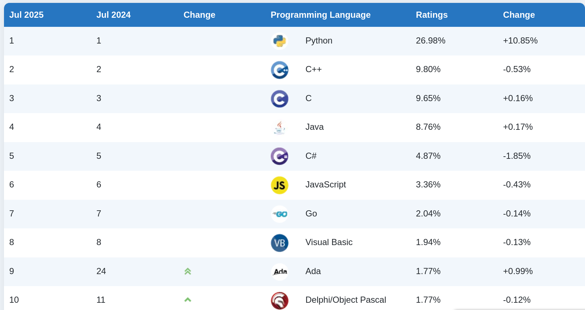
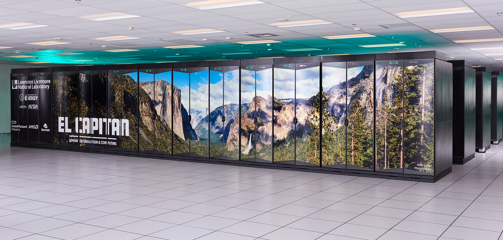
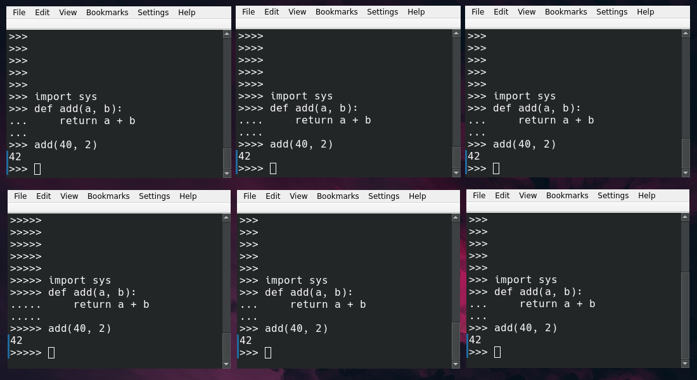
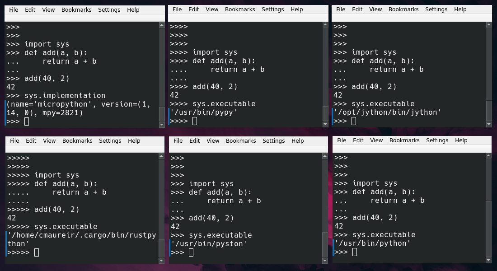
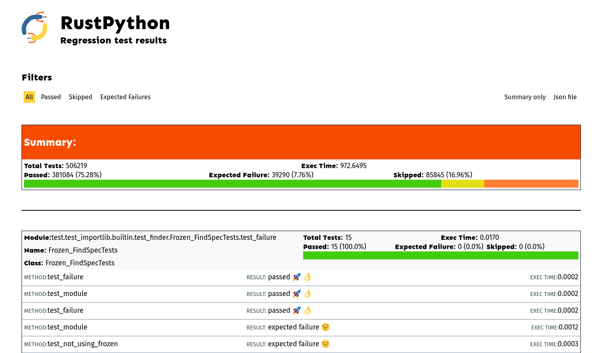
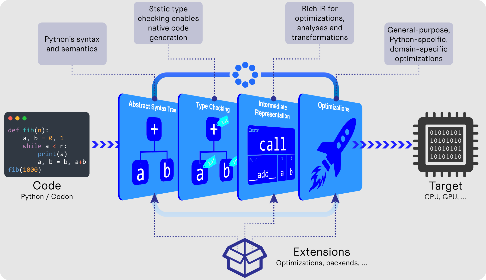

¿Qué viene después de Rust en el ecosistema de Python?
Cristián
maureira.dev
@cmaureir


Python es genial

tiobe.com/tiobe-index/ (julio 2025)
...pero, ¿por qué?
Demos
un paso atrás
¿Cuál es el Python más antiguo que probaste?
easy_install
numarray
Aprendiendo a programar
Software astronómico
ALMA Common Software (ACS)
Computación de alto rendimiento
Trading de alta frecuencia y simulaciones astrofísicas
Arquitecturas y chips
(CUDA Toolkit 4 -> ahora en 12.9)
Grandes clústeres computacionales

Clúster NAOC 2009 (pocos Peta FLOPs) vs El Capitan 2025 (2.7 exaFLOPS)
Más hilos probablemente no harán tu código más rápido
En este escenario
Algunos lenguajes eran mejores que otros
...pero bueno, probablemente tengas
una historia similar
Componentes clave
- Interoperabilidad entre lenguajes
- Evolución del lenguaje
Qt Bridges

- Framework de C++
- No son bindings 1:1
- Integrado con Swift, Java, C#, Rust y Python
- qt.io/qt-bridges
Lenguajes de
programación
El lenguaje de programación C
- Fortran*, BCPL+SMALGOL -> B
- Assembly, NB -> C
La inspiración de Python
HOW TO RETURN words document:
PUT {} IN collection
FOR line IN document:
FOR word IN split line:
IF word not.in collection:
INSERT word IN collection
RETURN collection
Lenguaje de programación ABC
¿Qué Python?




Python fue inspirado por ABC y escrito en C
¿Por qué eso es una buena noticia?
C puede "hablar" con muchos otros lenguajes


El enfoque básico:
extensiones en C
Extensión de Python con C (1/4)
static PyObject* hello(PyObject* self, PyObject* args) {
char *msg = "Hello EuroPython 2025!";
return Py_BuildValue("s", msg);
}
static PyMethodDef functions[] = {
{"hello", (PyCFunction)hello, METH_NOARGS, NULL},
{NULL, NULL, 0, NULL}
};
Extensión de Python con C (2/4)
static struct PyModuleDef module = {
PyModuleDef_HEAD_INIT,
"ep2025",
NULL,
-1,
functions
};
Extensión de Python con C (3/4)
PyMODINIT_FUNC PyInit_ep2025(void){
return PyModule_Create(&module);
}
Extensión de Python con C (4/4)
>>> from ep2025 import hello
>>> hello()
'Hello EuroPython 2025!'
¿Demasiado complicado?
😵💫
Python y C
# Un comentario
import my_module
def add(a: int, b: float) -> float:
return a + b
def main():
msg: str = "Hello World"
x: int = 3
y: float = 0.14
z: float = add(x, y)
print("%f" % z)
if __name__ == "__main__":
main()
// Un comentario
#include <my_module.h>
float add(int a, float b) {
return a + b;
}
int main(){
char msg[] = "Hello World";
int x = 3;
float y = 0.14;
float z = add(x, y);
printf("%f", z)
return 0;
}
Python también puede ser difícil
*s,='abcde'
n&~-n<1
_='_=%r;print(_%%_)';print(_%_)
x,y=[6 ,11]\
,[ 48,67 ];s\
=[ x for x \
in vars ( )]\
;b= vars( )[s[ x[
0]]] ;k= list( (b.
__dict__ .keys (
) )) ;g= getattr(b
,k[x[1]*2]);m=g(
b,k[y[1]+1]);l=g\
(b ,k
[x [1
]* 3] ); i=\
g( b, k[ x[
1] *6]);p =g\
(b ,k[y[0 ]-
x[0]]) ;a=g(g(b,k
[x[0]] )("".join(
m( g(b,k[ x[
0] //2+x[ 1]
]) ,(m( g(
b, k[y[ 0]
-1 ]) ,g(b,k[x [1]+
y[ 1] +1])([*[ g(b,
k[ y[0]-1]) (y)] *3
], [0,x[0], 0])) ))
)) ,"". join(m(g(b
,k [x[0 ]//2+x[1]]
), (m (g
(b ,k [y
[0 ]- 1]
), g( b,
k[x[1] +y[1 ]+1]
)([*[g (b,k [y[0
]- 1])( y) ]*4],[x[0]*- 3,-1
,x [0]* -2 ,x[0]//2]))) )));
p(i((1/5**.5)*(((1+5**.5)/2)**(i(a[1])+1)-((1
-5**.5)/2)**(i(a[1])+1)))) if l(a)>1 else p(1)
Ganador más reproducible - https://pyobfusc.com/#winners
Entonces, ¿por qué no usamos C?
Manejo de memoria (menos flexible)
l = [1, 2, 3, 4, 5]
l2 = []
l2.append(42)
l2.append(17)
l2.append("Hallo")
int a[] = {1, 2, 3, 4, 5};
int *a2 = malloc(3 * sizeof(int));
a2[0] = 42;
a2[1] = 17
a2[2] = "Hallo" // BOOM! 🔥
// No olvides liberar
// la memoria que reservaste
free(a2);
Faltan las baterías
typedef struct {
size_t size;
int *data;
} int_vector;
int *create_vector(size_t n) {
return malloc(n * sizeof(int));
}
void set_vector(int_vector *v,
size_t n, int x) {
if(v) {
if(n >= v->size) {
resize_vector(v, n);
}
v->data[n] = x;
}
}
// ¡Yupi, tenemos "más o menos" un vector
int_vector *v = create_vector(10);
set_vector(v, 0, 123);
Herramientas
$ gcc main.c -o main
- Makefile*
- Ninja
- CMake
Entonces, ¿cuáles son nuestras opciones?
Swift

- 2014
- Obj-C ('89) -> Swift
- Sintaxis más corta/mejor
- Seguridad de memoria (refcount automático)
- Inferencia de tipos
- ¡Tiene REPL!
- Encadenamiento opcional
- POO
Erlang

- 1986
- Funcional y tolerante a fallos
- ¿Alguien dijo industria de telecomunicaciones?
- Prolog -> BEAM
- Aislamiento de procesos
- Modelo de concurrencia
- Cero tiempo de inactividad al actualizar código
- VM BEAM (Elixir y gleam)
Julia

- 2012
- Velocidad de C, sensación de R/Python/Matlab
- JIT
- Sistema de tipos paramétricos flexible
- Funciones con despacho múltiple
- Sin POO (tipos compuestos mediante structs)
Modern C++ C++11 (1/4)
// tipo 'auto'
auto a = 0.74;
auto b = "hello";
// tuplas
auto triple = std::make_tuple(1,2,3);
std::tie(x, y, z) = triple;
// diccionarios
auto d = std::unordered_map<int,std::string>({4, "Mary"},
{2, "John"});
auto value = d[4];
// lambdas
std::sort(v.begin(), v.end(),
[](int x, int y) { return std::abs(x) < std::abs(y)});
Modern C++ C++13 (2/4)
// tipo de retorno 'auto'
auto add(int x, int y) {
return x + y;
}
// plantillas de variables
template <typename T>
constexpr T pi = T(3.14159265359...);
// literales binarios
auto b = 0b1101;
// separadores de dígitos
auto n = 1'000'000;
Modern C++ C++17 (3/4)
// desempaquetar al llamar funciones
std::pair<int, int> origin() {
return std::pair<int, int> {0, 0}
}
auto [x, y] = origin();
// desempaquetar valores de un mapa en un bucle
auto items = std::unordered_map<int, std::string>({4, "Mary"},
{2, "John"});
for (const auto& [key, value]: items) {
//...
}
Modern C++ C++20 (4/4)
// declaración de módulo
export module simple;
export string hello() {
return "¡Ayúdame por favor!";
}
// uso del módulo
import simple;
int main() {
cout << hello();
}
// rangos
vector ints{0,1,2,3,4,5};
auto even = [](int i){ return 0 == i % 2; };
auto square = [](int i) { return i * i; };
for (int i : ints | views::filter(even) | views::transform(square)) {
cout << i << ' ';
}
Lo bueno y
lo malo
Pilar del mundo tecnológico actual...
...pero viejo y enrevesado
¿Tiene C++
un sucesor?
Carbon
- En desarrollo
- Enfoque de sucesor
- Interoperabilidad (C++ ⇄ Carbon)
- Sistema genérico moderno
- Estrategia de seguridad (plan de migración)
package hello api;
fn Main() -> i32 {
var s: auto = "Hello, world!";
Print(s);
return 0;
}
$ ./explorer hello.carbon
Hello, world!
Carbon - Aspectos destacados
- Sintaxis más simple
- Sucesor de C++ más seguro y moderno
- Seguridad: única forma de cambiar radicalmente la biblioteca estándar
- Aún experimental
Carbon Language Successor Strategy: From C++ Interop to Memory Safety - Chandler Carruth - CppNow 23
New Circle
- Nuevo compilador que entiende nuevas características
- Evolución de C++
- Corrigiendo "errores" con nuevas características
- Cambia la sintaxis
#feature on choice
#include
choice IntResult {
Success(int),
Failure(std::string),
Cancelled,
};
template
void func(T obj) {
match(obj) {
.Success(auto x) => std::cout<< "Success:"<< x<< "\n";
.Failure(auto x) => std::cout<< "Failure:"<< x<< "\n";
.Cancelled => std::terminate();
};
}
int main() {
IntResult r1 = .Success(12345);
IntResult r2 = .Failure("Hello");
IntResult r3 = .Cancelled();
func(r1);
func(r2);
func(r3);
}
New Circle - Aspectos destacados
- Menos defectos
- Características amigables
- Compatible con C++
Sean Baxter @Bloomberg: Circle corrige defectos y hace el lenguaje C++ más seguro y productivo
¡Espera! ¡Pero estábamos hablando de alternativas a C!
Zig
- Sin flujo de control ni reserva de memoria ocultos
- Sin preprocesador, sin macros
- Metaprogramación: ejecución de código en tiempo de compilación y evaluación perezosa (
comptime) - ¡Tests, tests, tests!
// main.zig
const std = @import("std");
pub fn main() !void {
const stdout = std.io.getStdOut().writer();
try stdout.print("Hello, {s}!\n", .{"world"});
}
$ zig build-exe main.zig
$ ./hello
Hello, world!
Zig - Aspectos destacados (1/5)
Integración con bibliotecas de C sin FFI/bindings
const c = @cImport({
// See https://github.com/ziglang/zig/issues/515
@cDefine("_NO_CRT_STDIO_INLINE", "1");
@cInclude("stdio.h");
});
pub fn main() void {
_ = c.printf("hello\n");
}
Zig - Aspectos destacados (2/5)
comptime y test
fn max(comptime T: type, a: T, b: T) T {
return if (a > b) a else b;
}
fn gimmeTheBiggerFloat(a: f32, b: f32) f32 {
return max(f32, a, b);
}
fn gimmeTheBiggerInteger(a: u64, b: u64) u64 {
return max(u64, a, b);
}
// literal de arreglo
const m = [_]u8{ 'h', 'e', 'l', 'l', 'o' };
// obtener el tamaño de un arreglo
comptime {
assert(m.len == 5);
}
const std = @import("std");
const expect = std.testing.expect;
test {
const a = {};
const b = void{};
try expect(@TypeOf(a) == void);
try expect(@TypeOf(b) == void);
try expect(a == b);
}
Zig - Aspectos destacados (3/5)
Herramientas
$ zig init-exe
info: Created build.zig
info: Created src/main.zig
info: Next, try `zig build --help` or `zig build run`
$ tree
.
├── build.zig
└── src
└── main.zig
2 directories, 2 files
🥑 ~/yourapp2 % tree zig-out
zig-out
└── bin
└── yourapp2
$ zig build run
All your codebase are belong to us.
Run `zig build test` to run the tests.
Zig - Aspectos destacados (4/5)
Compilación cruzada
$ zig build-exe src/main.zig -target x86_64-windows-gnu
$ file main.exe
main.exe: PE32+ executable (console) x86-64, for MS Windows, 7 sections
$ zig build-exe src/main.zig -target aarch64-linux-musl
$ file main
main: ELF 64-bit LSB executable, ARM aarch64, version 1 (SYSV), statically linked, with debug_info, not stripped
Zig - Aspectos destacados (5/5)
- allocators personalizados
- Más rápido y seguro que C (*)
- desarrollo activo
Intro to the Zig Programming Language • Andrew Kelley • GOTO 2022
Ziggy PyDust (Zig)
const py = @import("pydust");
pub fn add(args: struct { a: i32, b: i32 }) i32 {
return args.a + args.b;
}
comptime {
py.rootmodule(@This());
}
$ poetry install
Rust
- Rendimiento
- Rápido y eficiente en memoria (sin runtime ni GC).
- Fiabilidad
- Sistema de tipos rico y modelo de ownership (seguridad de memoria e hilos)
- Productividad
- Documentación, compilador amigable, gestor de paquetes y herramienta de build.
fn main() {
println!("Hello, world!");
}
$ rustc main.rs
$ ./main
Hello, world!
¿Por qué lo adoptamos?
Extensión de Python con Rust (PyO3)
use pyo3::prelude::*;
/// Formatea la suma de dos números como string.
#[pyfunction]
fn hello(s: &str) -> PyResult {
let msg = format!("Lo siento, no lo siento {s}!");
Ok(msg)
}
/// Un módulo de Python implementado en Rust.
#[pymodule]
fn ep2025(_py: Python, m: &PyModule) -> PyResult<()> {
m.add_function(wrap_pyfunction!(hello, m)?)?;
Ok(())
}
Herramientas, sistemas centrales, toolchain, kernel
Rust es genial
pero...
Aplicación real
rustglob
use pyo3::{prelude::*, types::PyList};
use std::fs;
use walkdir::WalkDir;
#[pyfunction]
fn glob(py: Python<'_>, path: String, recursive: Option) -> PyResult<&PyList> {
let list: &PyList = PyList::empty(py);
if recursive.unwrap_or(false) == false {
for path in fs::read_dir(path).unwrap() {
let _ = list.append(path.unwrap().path().display().to_string());
}
} else {
for path in WalkDir::new(path) {
let _ = list.append(path.unwrap().path().display().to_string());
}
};
Ok(list)
}
#[pymodule]
fn rust_glob(_py: Python, m: &PyModule) -> PyResult<()> {
m.add_function(wrap_pyfunction!(glob, m)?)?;
Ok(())
}
Configuración y benchmark
1K directorios, 1M archivos
| No recursivo (s) | Recursivo (s) | Mejora | |
glob |
0.00208 | 5.65685 | - |
Path.glob |
2.66983 | 2.93025 | 48.7% |
Rust glob (PyO3) |
0.00088 | 0.88313 | 84.7%🎉 |
C++ glob |
0.00063 | 0.58559 | 89.7%🫣 |
Pfff...seguro que
optimizaste la impl. de C++
static PyObject* fastglob_glob(PyObject* self, PyObject* args, PyObject* kwds){
// Parseando los argumentos
...
// Creando una lista vacía
PyObject *l = PyList_New(0);
// Llenando la lista según si es recursivo o no
if (recursive) {
for (const auto &entry : fs::recursive_directory_iterator(directory))
PyList_Append(l, PyUnicode_FromString(entry.path().c_str()));
} else {
for (const auto &entry : fs::directory_iterator(directory))
PyList_Append(l, PyUnicode_FromString(entry.path().c_str()));
}
return l;
}
¡Eso es injusto!
es el overhead de PyO3
Configuración y benchmark
1K directorios, 1M archivos
| No recursivo (s) | Recursivo (s) | Mejora | |
glob |
0.00208 | 5.65685 | - |
Path.glob |
2.66983 | 2.93025 | 48.7% |
Rust glob (PyO3) |
0.00088 | 0.88313 | 84.5% |
C++ glob |
0.00063 | 0.58559 | 89.7% |
C++ nanobind |
0.00053 | 0.59322 | 89.5% |
Si C++ es más rápido,
¿por qué no lo usamos? 🤔
(Volveremos a esto más adelante)
Seguridad de memoria/hilos en Rust
#include <stdio.h>
#include <stdint.h>
int main(int argc, char *argv[]) {
uint32_t array[5] = {0, 0, 0, 0, 0};
for (int idx = 0; idx < 7; idx++) {
printf("%d: %d\n", idx, array[idx]);
}
return 0;
}
0: 0
1: 0
2: 0
3: 0
4: 0
5: 0
6: -812787712
fn main() {
let array: [u32; 5] = [0;5];
for index in 0..array.len() + 2 {
println!("{}: {}", index, array[index])
}
}
0: 0
1: 0
2: 0
3: 0
4: 0
thread 'main' panicked at overflow.rs:4:35:
index out of bounds: the len is 5 but the index
is 5
note: run with `RUST_BACKTRACE=1` environment
variable to display a backtrace
Herramientas de Rust
➜ project cargo init
Creating binary (application) package
note: see more `Cargo.toml` keys and their definitions at
https://doc.rust-lang.org/cargo/reference/manifest.html
➜ project tree
.
├── Cargo.toml
└── src
└── main.rs
2 directories, 2 files
➜ project cargo build
Compiling project v0.1.0 (/tmp/project)
Finished `dev` profile [unoptimized + debuginfo] target(s) in 0.21s
➜ project cargo run
Finished `dev` profile [unoptimized + debuginfo] target(s) in 0.00s
Running `target/debug/project`
Hello, world!
Si es tan bueno
¿por qué no una reescritura completa?
rustpython (1/2)
- Reescritura completa
- Inspirado en Jython/IronPython
- Puede embeberse en programas de Rust
- Compila a WebAssembly
- ...¡pip funciona!
# JIT experimental
def foo():
a = 5
return 10 + a
foo.__jit__()
assert foo() == 15
rustpython (2/2)

Si vamos a reescribir...
¿por qué no repensar todo?
LLVM
mojo 🔥 (1/2)
Front-end con sabor a Python sobre un poderoso backend de llvm para generar código nativo
mojo 🔥 (2/2)
- Lenguaje específico de dominio embebido (eDSL)
- Lenguaje de sistemas para programación de GPU
- Tipos dependientes
- MLIR: Representación Intermedia Multinivel
from python import Python
def main():
print("¡Hola Mojo 🔥!")
var name: String = input("¿Quién eres? ")
var greeting: String = "Hola, " + name + "!"
print(greeting)
for x in range(9, 0, -3):
print(x)
var _t = Python.import_module(
"simple_interop"
)
_t.test_interop_func()
Otras opciones: codon

Otras opciones: triton
BLOCK = 512
# Este es un kernel de GPU en Numba.
# Distintas instancias de esta
# función pueden ejecutarse en paralelo.
@jit
def add(X, Y, Z, N):
# En Numba/CUDA, cada instancia del
# kernel usa un modelo de ejecución SIMT,
# donde las instrucciones se ejecutan en
# paralelo para distintos valores de threadIdx
tid = threadIdx.x
bid = blockIdx.x
# índice escalar
idx = bid * BLOCK + tid
if id < N:
# En Numba no hay punteros.
# Z,X,Y son tensores densos
Z[idx] = X[idx] + Y[idx]
...
grid = (ceil_div(N, BLOCK),)
block = (BLOCK,)
add[grid, block](x, y, z, x.shape[0])
BLOCK = 512
# Este es un kernel de GPU en Triton.
# Distintas instancias de esta
# función pueden ejecutarse en paralelo.
@jit
def add(X, Y, Z, N):
# En Triton, cada instancia del kernel
# ejecuta operaciones de bloque en un
# único hilo: no existe una construcción
# análoga a threadIdx
pid = program_id(0)
# bloque de índices
idx = pid * BLOCK + arange(BLOCK)
mask = idx < N
# Triton usa aritmética de punteros
# en lugar de operadores de indexado
x = load(X + idx, mask=mask)
y = load(Y + idx, mask=mask)
store(Z + idx, x + y, mask=mask)
...
grid = (ceil_div(N, BLOCK),)
# sin thread-block
add[grid](x, y, z, x.shape[0])
¿Pero esto sigue siendo Python?
¿Cuál es nuestro objetivo?
¿Hacer Python más rápido?
¿o movernos a un nuevo lenguaje?
Próximas características de Python
Últimas optimizaciones de Python
- 3.11 - Intérprete adaptativo especializante
- 3.12 - Generador de intérprete con análisis y modificación del DSL
- 3.13 - Más optimización del intérprete de micro-ops (ejecución de código "caliente").
- 3.14 - Intérprete con tail calls y el nuevo JIT.
Antes de la VM
especializado
Micro-Op
Micro-Op
optimizadas
Brandt Bucher: Construyendo un compilador JIT para CPython (PyCon US 2024)
¿Es C suficientemente bueno
para ser la base del Python estándar?
Tres opciones para el futuro 🔮
Opción 1
Las partes internas siguen mejorando con nuevas características y técnicas para que Python sea mejor*
Opción 2
Entra en juego otro <lang>, y empezamos de nuevo reescribiendo nuestras herramientas y módulos en él.
Opción 3
Nos rendimos, mantenemos la sintaxis de Python como una idea y adoptamos una nueva implementación de Python
Opción 4
Nos enojamos, lo dejamos todo y seguimos adelante...
Python no es perfecto
¡y está bien! 🎉
Mientras más lenguajes entendamos...
..más podremos
darle forma al futuro de Python.
¿Qué viene después de Rust en el ecosistema de Python?
Dr. Cristián Maureira-Fredes
@cmaureir
github.com/cmaureir/europython2025